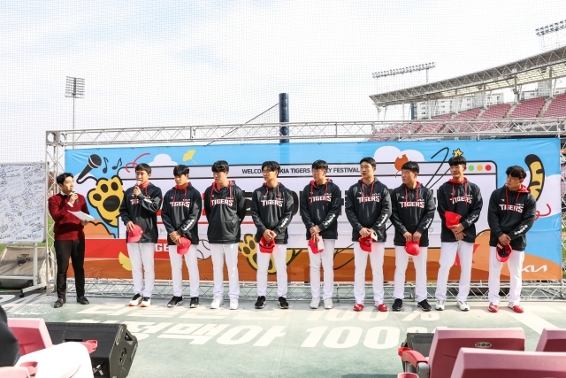

html 5
2022-11-01
KIA 타이거즈의 가을도 다시 시작된다. 불펜 필승조 등 취약 포지션에 두터움을 더할 옥석을 골라낼 수 있을지가 과제다. KIA는 1일부터 제주특별자치도 서귀포시 강창학야구장 일원에서 마무리 훈련에 돌입한다. 24일까지 ‘3일 훈련, 1일 휴식’으로 진행되는 이번 마무리 훈련에는 퓨처스 선수와 2023년 신인 선수 24명이 참가해 체력 및 기술 훈련을 소화할 예정이다. 마무리 캠프에서 KIA의 지향점은 분명하다. 상대적으로 뎁스가 얇았던 올해 선수층을 채울만한 신예를 찾고, 1군 선수단의 전체 전력을 높이는 것이 첫 번째 목표다. 또한 젊은 선수 및 신인 선수들과 함께 1군 코칭스태프가 호흡하면서 2023 시즌의 청사진을 그려보는 시간이 될 전망이다. 그런 의미에서 KIA 마무리캠프는 1군 코칭스태프와 유망 선수들이 대거 포함됐다. 김종국 감독을 중심으로 진갑용, 정명원, 곽정철, 이범호, 박기남, 이현곤, 조재영, 김상훈 코치가 마무리 캠프에서 선수들을 이끈다. 감독을 포함한 수석코치와 주요 보직 코칭스태프가 모두 포함된 명단인 만큼 마무리캠프에서 좋은 모습을 보여주는 선수가 오는 겨울과 내년 봄으로 이어질 스프링캠프와 시범경기 명단까지 포함될 수 있다. KIA가 마무리캠프에서 가장 첫 번째로 중점을 두고 있는 포지션은 투수다. 상대적으로 올해 큰 어려움을 겪었던 불펜을 중심으로 마운드에 두터움을 더할 자원을 육성하고 발굴하는 것이 최우선 목표다. 실제 KIA는 강병우, 김유신, 김찬민, 나용기, 송후섭, 유지성, 이태규, 장지수까지 8명의 저연차 투수에 2023 신인인 김세일, 곽도규, 이송찬, 박일훈까지 총 12명의 투수를 대거 이번 마무리 캠프에 포함했다. 대부분 병역 의무를 수행한 자원들과 신인들이 중심이란 것이 눈에 띈다. 3년차 유지성·4년차 이태규·나용기·장지수는 각각 올해 중순이나 지난해 말 병역 의무를 마치고 팀에 복귀한 자원들이다. 이외에도 5년차 김유신·6년차 송후섭 등도 모두 병역 의무를 수행했다. 아직까지 1군과 퓨처스리그 무대에서 보여준 것이 많지 않은 선수들이다. 하지만 장기적인 계획을 바탕으로 이른 시기 군 문제를 해결한 선수들인 만큼 이들 가운데 KIA가 미래 마운드의 핵심을 발견하겠다는 생각도 함께 엿볼 수 있다. 또한 강병우·김찬민과 같은 1년차 투수들은 올해 퓨처스리그에서 시행착오를 겪었지만 여전히 KIA가 많은 기대를 걸고 있는 자원들이다. 입단 2년 차 시즌인 올해 10승 투수로 거듭난 이의리가 이들의 가장 가까운 롤모델이다.